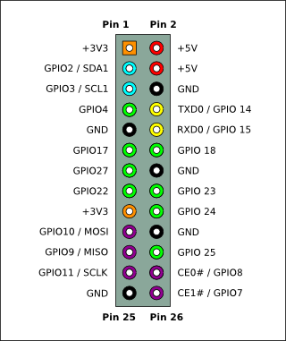
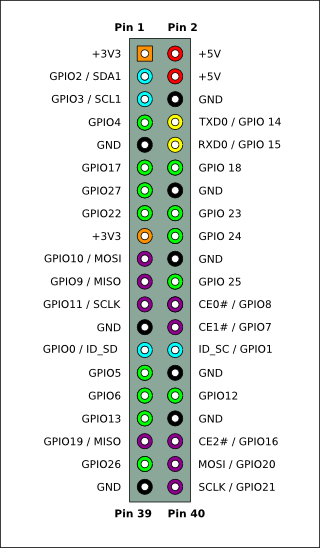
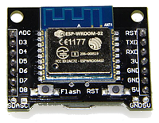
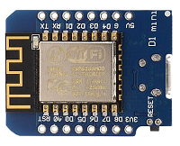

マイコン，ICピン配置（個人的メモ）
Home > Software > ソフトウエア開発・サーバ管理のメモ帳 > このページ
Last Update
電子工作用ICのピン配置図（pin map）
Raspberry Pi
Raspberry Pi 1 Model A and B (Rev 2): 26 pin header

Pi 1 Model B (Rev 1)は、pin3 = GPIO0, pin5 = GPIO1 がアサインされている。
pinout図は RPi Low-level peripherals から転載。そのほか、 Simple Guide to the Raspberry Pi GPIO Header や The Raspberry Pi GPIO pinout guideなども参考にした。
Raspberry Pi 2, 3, 4, Zero : 40 pin header

Arduino, NodeMCU (ESP8266)
| ESP8266シルク印刷 | GPIO no | #define | |
|---|---|---|---|
| D0 | GPIO16 | ||
| D1 | GPIO5 | PIN_WIRE_SCL | |
| D2 | GPIO4 | PIN_WIRE_SDA | |
| D3 | GPIO0 | 10k pull-up, GND短絡でFlashモード | |
| D4 | GPIO2 | 10k pull-up | |
| D5 | GPIO14 | PIN_SPI_SCK | |
| D6 | GPIO12 | PIN_SPI_MISO | |
| D7 | GPIO13 | PIN_SPI_MOSI | |
| D8 | GPIO15 | PIN_SPI_SS | 10k pull-down |
| D9 | GPIO3 | (RX) | |
| D10 | GPIO1 | (TX) | |
| A0 | ADC (GPIO17) | PIN_A0 | A/D入力 0〜3.3V |
| RESET | RESET | 10k pull-up |
※ ピンの定義名は
packages/esp8266/hardware/esp8266/2.x.x/variants/generic/common.hや、packages/esp8266/hardware/esp8266/2.x.x/variants/nodemcu/pins_arduino.hを参照した。
※ LEDに接続されているGPIO noは LED_BUILTIN として #defineされている
WeMos X-8266, ESP-WROOM-02
| ADC | ADC | ESP-WROOM-02  |
RST | RST | |||
| GPIO0 | D3 | TXD | TXD | ||||
| GPIO2 | D4 | RXD | RXD | ||||
| GPIO14 | D5 | 3V | 3V3 | ||||
| GPIO12 | D6 | GND | GND | ||||
| GPIO13 | D7 | GND | GND | ||||
| GPIO15 | D8 | 5V | 5V | ||||
| GPIO5 | SDA(D1) | GPIO4 | SCL(D2) | GND | GND | 5V | 5V |
- ENとGPIO16ピンは、WeMos基板のピンには引き出されていない
- I2C初期化は Wire.begin(5,4)
WeMos D1 mini
| RST | RST | D1 mini  |
TX | TXD |
| ADC | A0 | RX | RXD | |
| GPIO16 | D0 | D1 | GPIO5(SCL) | |
| GPIO14 | D5 | D2 | GPIO4(SDA) | |
| GPIO12 | D6 | D3 | GPIO0 | |
| GPIO13 | D7 | D4 | GPIO2 | |
| GPIO15 | D8 | G | GND | |
| 3V3 | 3V3 | 5V | 5V | |
| RESET |
- deep sleepからの復帰機能を使うにはD0 (GPIO16)とRSTを短絡する
- Flashモードで再起動する場合は、D3 (GPIO0)をGNDに短絡した状態でResetボタンを押す
- D4 (GPIO2)をGNDと短絡するとボード上のBlue LEDが点灯する
- I2C初期化 Wire.begin(4, 5)